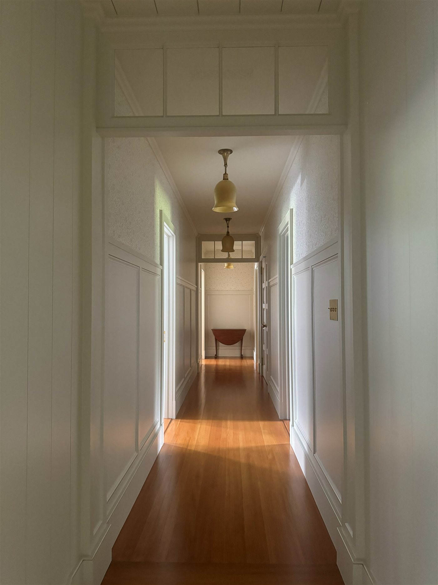
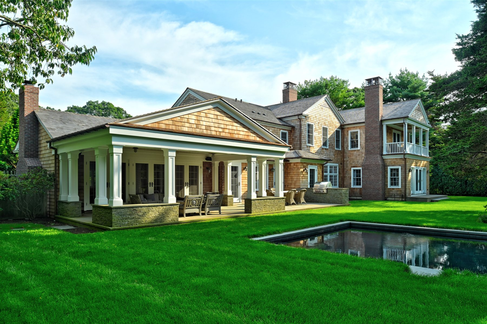
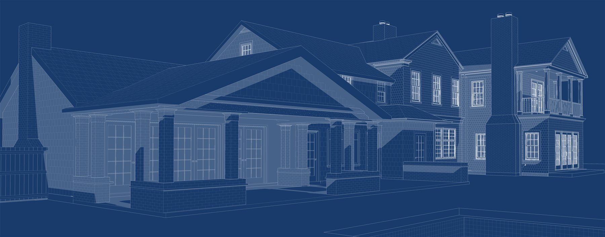
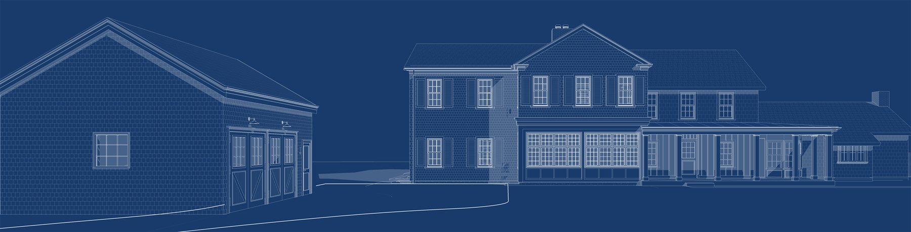

A coastal revival on the east end.
Further Lane is now a celebrity enclave, but it was once a quiet and rural place of farmhouses — much like the 1906 building at the heart of this Amagansett project: a restoration, renovation, and expansion.
The most significant challenge was the segue from traditional low-ceilinged rooms to modern spaces with gracious floor plans and high ceilings — without ever being able to tell what is new and what is old. Antique reclaimed cladding let us install new ceiling beams that echo the entry hall's, but the most important piece of the puzzle was sizing rooms and their furniture to feel unrestrainedly modern yet charming, in keeping with the old house from which the addition grew.
Hiding within this relatively modest shingle-style home are two gyms, a full spa, six bedrooms — most of them en-suite — two living rooms, a library, a lounge and wine bar, and a pool house BBQ area.





